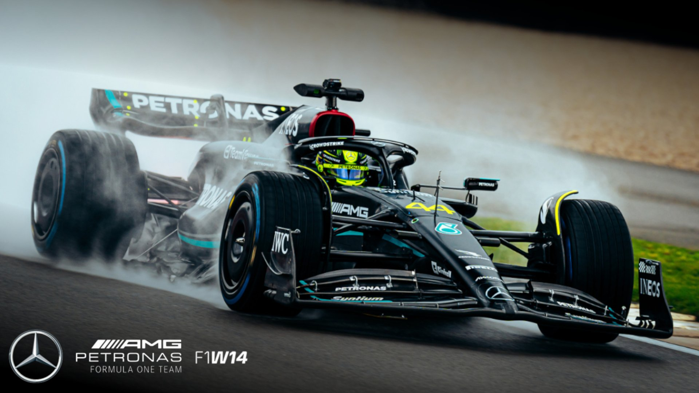
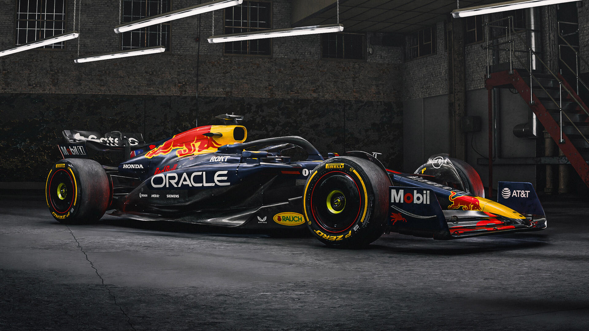
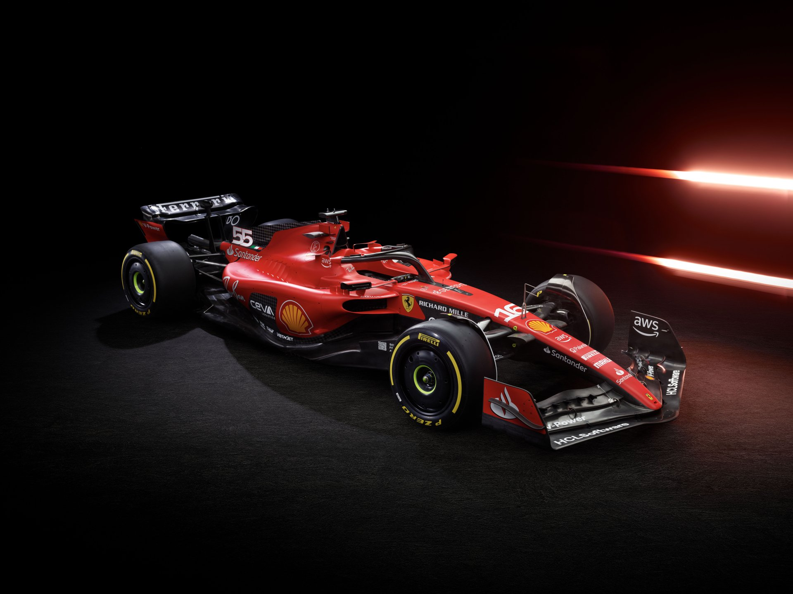

Mercedes es una de las escuderías más exitosas de la historia reciente de la Fórmula 1. Aunque participó en distintas etapas del campeonato, regresó como equipo oficial en 2010 y construyó una de las mayores eras de dominio que ha visto este deporte. Entre 2014 y 2021 ganó ocho campeonatos consecutivos de constructores, un récord histórico. La escudería alcanzó su máximo nivel con pilotos como Lewis Hamilton y Nico Rosberg, quienes protagonizaron intensas luchas internas por el campeonato. Mercedes es reconocida por su innovación tecnológica, la fiabilidad de sus monoplazas y su excelente trabajo estratégico durante las carreras. 🏆 8 campeonatos de constructores. 🥇 Más de 120 victorias. 🇩🇪 Equipo representativo de Mercedes-Benz. ⭐ Pilotos históricos: Hamilton, Rosberg y George Russell.

Red Bull Racing debutó en Fórmula 1 en 2005 y rápidamente se convirtió en una potencia del deporte. Su primer gran ciclo ganador llegó entre 2010 y 2013 con Sebastian Vettel, quien consiguió cuatro campeonatos mundiales consecutivos. A partir de 2021 inició una nueva era de dominio con Max Verstappen, convirtiéndose nuevamente en el equipo a batir. Red Bull es famosa por sus diseños aerodinámicos avanzados y por su filosofía agresiva y competitiva. Además, ha desarrollado a numerosos talentos jóvenes a través de su programa de pilotos. 🏆 6 campeonatos de constructores. 🥇 Más de 120 victorias. 🇦🇹 Escudería austriaca. ⭐ Pilotos destacados: Verstappen, Vettel, Sergio Pérez y Daniel Ricciardo.

Ferrari es el equipo más emblemático de la Fórmula 1 y el único que ha competido en todas las temporadas desde la creación del campeonato en 1950. Su historia está llena de éxitos, grandes pilotos y momentos legendarios que han convertido al equipo italiano en un símbolo del automovilismo mundial. La época más exitosa de Ferrari llegó a principios de los años 2000 con Michael Schumacher, quien ganó cinco campeonatos consecutivos con la escudería. Ferrari cuenta con la mayor cantidad de campeonatos de constructores y es considerada por muchos aficionados como el corazón de la Fórmula 1. 🏆 16 campeonatos de constructores (récord histórico). 🥇 Más de 240 victorias. 🇮🇹 Equipo italiano con sede en Maranello. ⭐ Pilotos legendarios: Schumacher, Niki Lauda, Kimi Räikkönen, Charles Leclerc y Hamilton.